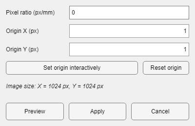

A continuous image file in Normal mode.
Opening a .dat requires AcqInfos.mat in the same Save Folder. It supplies the shared image dimensions and frame rate. A .umt entry carries its own dimensions and labels.
A continuous image file in Normal mode.
| Control | Effect |
|---|---|
| Previous / Next | Moves one frame within the active view. |
| Frame slider | Moves through continuous frames or event-relative frames. |
| Play | Advances frames as a movie until stopped or the sequence ends. |
| Speed | Requests a playback multiplier. The app can reduce it when disk or display speed cannot keep up. |
| Normal mode / Event mode | Switches between the continuous recording and an event-aligned view. |
| Condition / Repetition | Selects a condition and one trial or AVERAGE. |
Event mode is available for .dat only when events were detected and a usable events.mat exists in the Save Folder. See Events Manager. For an event-based UMT entry, the event choices come from the UMT file itself.

Event mode displays the selected condition and repetition or their average.
Ignored events stay ignored.
Delete condition and Delete repetition do not remove image samples. They update the ignored-event selection in events.mat. Those trials remain excluded in DataViewer and in analysis functions that use the event file. Restore makes them available again.
| Control | Use |
|---|---|
| Click Image View | Moves the crosshair and changes the pixel shown in the temporal plot. |
| Colormap and Invert | Choose or reverse the display palette. |
| Clip | Adjust the lower and upper display limits. |
| Auto | Calculates useful display limits from the current data. |
| Set Limits | Enter exact display limits. |
| Hide crosshair | Shows or hides the selected-pixel marker. |
Choose Utilities > View Calibration to relate image pixels to physical coordinates. Pixel ratio (px/mm) states how many pixels correspond to one millimetre; use 0 or an empty value to keep pixel units. Origin X and Origin Y define the point reported as the coordinate origin. You can enter the point, reset it to the top-left pixel, or select it interactively on the image.

Preview applies the proposed axes and origin marker only to the current display. Apply confirms the values and writes them to DataParams.mat. Cancel restores the calibration that was active when the dialog opened.
The black line is the selected pixel through time. Every visible, non-empty ROI adds a spatial-mean trace in the ROI color. The vertical marker follows the current frame. In Normal mode, event intervals appear as shaded patches. In Event mode, the axis is relative to event onset. Selecting one repetition shows that trial; selecting AVERAGE shows the event-aligned average for the crosshair and visible ROIs, with translucent shaded patches representing the standard error of the mean (SEM).

The red ROI contributes the matching red trace.
When opening a .dat file that does not fit in memory, DataViewer caches a spatial region through time instead of loading the complete recording. A dotted white rectangle marks the cached region. Clicking outside it automatically rebuilds the cache around the new pixel unless the cache has been locked from the image context menu. The cache changes reading speed only; the file on disk is unchanged.
Opening another file resets the source and project context. ROIs intentionally remain loaded when their image size is compatible, and their traces are recalculated. Before switching, DataViewer asks how to handle a currently displayed PipelineManager temporary result. Save any result that must persist.
Do not infer dimensions from file size.
AcqInfos.mat provides the dimensions used to reconstruct .dat. A file-size match is not a substitute for valid metadata.